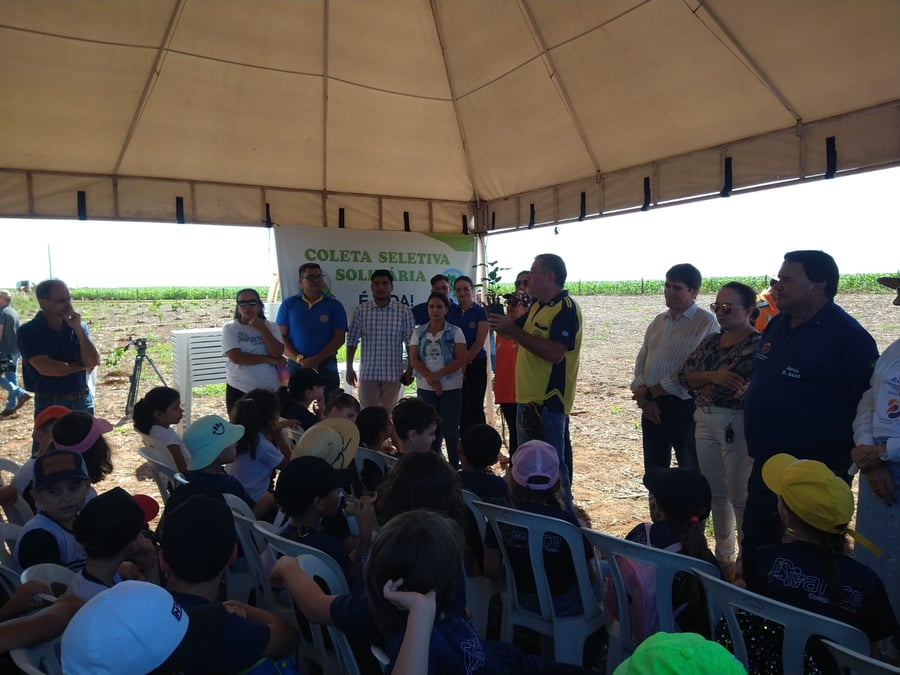

Programas & Projetos
Diagnóstico, recuperação de nascentes, conservação do solo e educação ambiental: conheça as iniciativas do IPAC.

Diagnóstico, recuperação de nascentes, conservação do solo e educação ambiental: conheça as iniciativas do IPAC.